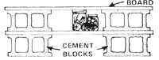
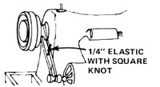
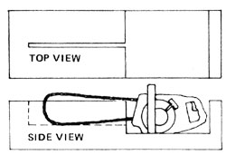
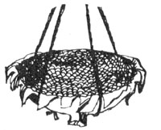

COUNTRY LORE
Sometimes it's hard to find storage space for all those canned goods you put up for the winter, but June Egland of Nekoosa, Wisconsin knows a way to create temporary shelves that work very well.
"My husband came up with this idea," June writes. "You just lay several ordinary cement blocks flat and add planks as shown in the sketch."
The shelves are easy to assemble and can be stacked to any height, and the space between planks nicely accommodates either quart- or pint-sized bottles (leaving the top shelves for larger jars). Best of all, this storage arrangement can be permanent ... or can be easily dismantled for relocation or when no longer needed.
If you're saving odds and ends of fat until you've accumulated enough to make soap, take a tip from William Welch of Portland, Oregon: Cover the stored grease with a weak solution of lye. That way it won't turn moldy or rancid before you have a chance to use it.
When Joy Blanchard of Silver Springs, Nevada prepares dried beans, she adds one teaspoon of ground ginger to the cooking water for each pound of the beans. The spice affects flavor very little, and works better than baking soda to counteract the wellknown gas-generating tendency of legumes, Joy says.
If those comfortable, well-cut jeans you just bought turn out-after their first washing-to be too short, take a tip from Joan de Vitry of Marietta, Pennsylvania. All you have to do to lengthen your "high water" pants attractively is sew a cuff of denim salvaged from another pair of Old Faithfuls to the bottom of each pant leg. The only trick to remember is to make sure that this added-on cuff is twice as long as the jeans you're working on are too short. Then turn up the added material so that it covers the seams, and take several small stitches in the side seams of the turnups to keep them from sagging.
Since it's natural for the "wrong" side of the denim to appear on a turned-up cuff, you needn't worry about matching the scrap fabric to the jeans you're lengthening.
While we're on the subject of lengthening: "When trying to let down the children's skirts and slacks, my wife has always found it so difficult to iron away the old hemlines and cuff lines," writes Howard Berg of Concord, California. "Then a neighbor suggested dampening both the creased material and the pressing cloth with a solution of three tablespoons of white vinegar to one cup of water. It works like a charm-even on synthetic fabrics-and it's sure saved us a bundle on school clothes."
Here's another helpful use for your indispensable household vinegar. Bargain fabrics may be easy on the budget, but unfortunately they sometimes fade after only a few washings. To help inexpensive sewing material retain its original colors, Mary Buckingham of Davis, California advises that you soak the cloth for at least 48 hours in a solution of 1/2 cup white vinegar to a gallon of water before you start to sew with it.
And before you put away the vinegar jug, Judie Friedman-Misterka of Dillsburg, Pennsylvania has yet another use for the all-purpose acid. When her electric steam iron went on the blink, Judie poured fullstrength vinegar into the iron's water well and left it there for 20 minutes, then dumped the liquid out and thoroughly rinsed the iron's reservoir with plain water. Apparently this treatment dissolved some of the mineral deposit that was clogging the appliance's steam apparatus, because the iron worked well again with no further ado. You might try the same method on mineral-encrusted teakettles.
If the belt on your treadle sewing machine should become loose, just remove the staple that holds it together, cut about 1/4 inch from each end of the strip, and use an awl or nail to punch a hole near the edge of the leather at each end. Then sew the ends together with heavy thread ("Button and Carpet" if possible). Debi Perrywinkle of Miranda, California says she's used the same leather belt (repaired in this way) on her machine for five years.
Or suppose you're stuck with a broken drive belt on your electric sewing machine? That, too, you can fix yourself, according to Maureen Darby of Leslie, Arkansas. Cut a piece of 1/4-inch-wide elastic about 10 inches long and tie the ends together in a square knot. Then stretch this loop between the small wheel (near the motor) and the large wheel (right where the drive belt was before it broke). It the elastic circlet is too loose, just untie it, snip off an inch or so, and reknot It. The new loop should fit tightly enough so that a slight turn of the large wheel with your hand will start the machine. When you resume stitching, the makeshift drive belt should work fine.
Put an end to that ice-cold seat in your unheated outhouse! Treat yourself to an inexpensive, ringshaped styrofoam pool toy ... and perch on that instead of on frigid wood. And thank W.B. McConnell of Presque Isle, Maine for sharing his discovery with the rest of us.
Kathleen Keith of Ramona, California swears by this method for home-style car radiator repair: Mix a batch of epoxy cement, using equal amounts of the two components of the glue. Add a walnut-sized clump of steel wool for each two tubes of epoxy used, and mix well. Make sure the edges of the hole to be repaired are dry, and apply the sticky wad of cement to the gap, filling it in completely. Then let the mended patch dry thoroughly before you refill the radiator. Even a large hole can be sealed in this way, says Kathleen, and a spot so patched should never again be a source of leakage.
Will you be clearing land in the spring? Before you chop all those stumps down to ground level, remember this advice given to Mary Gene Beheler of Ona, West Virginia by her neighbor (a farmer of some 50 years experience). Cut the saplings off at waist height, because the longer stumps will rot more readily and are much less hazardous to grazing critters and tractor tires.
Problem: How to hold a chain saw steady while you're sharpening the chain. Solution: Make a jig like the one described by Bernard Davies of Remsen, New York. You'll not only save time, but also have a sharper saw, since you'll be able to file all the teeth at the same angle. Also, by thus making the sharpening chore easier, you'll be encouraging yourself to do the job as soon as it becomes necessary, rather than putting it off till the chain is hopelessly dull and much harder to hone.
Ready to begin? Select a log that's at least 14 inches in diameter and make a single rip cut down its center, as shown in the diagram. This gash should be slightly longer than the chain saw bar, and deep enough so that just the top inch of the bar and chain protrudes.
Next, saw out a rectangular opening in the chunk of wood (at one end of the cut) so that the powerhead portion of the saw will just fit into the cut-out space, with one inch of bare chain exposed. Then set the saw in the jig and file away!
Since the commercial weatherstripping for entranceways is made for doors that hang square in the frame-and since the exterior doors of old farmhouses are usually warped and ill-fitting-Judy Daily of Reedstown, Wisconsin notes that it's often necessary to improvise one's own draft stoppers.
What Judy did was sew double-layered strips of heavy, brightly printed cloth into tubes the length of her door openings. Each tube was sewn inside out, with one end left open, so that no seam edges would show when the contrivance was turned right side out. Judy next filled the long, skinny "pillows" with sand, and then stitched the open ends closed.
According to their creator, one of these tubes looks much better flopped against a door than an old coat or towel or folded rug would.
It can be difficult-or downright dangerous-to get a stubborn horse to give you its leg when you want to clean or treat some part of the appendage. But here's a gentle, persuasive technique that works well for Mike Klein of Wolcott, New York.
First, tie the horse at head height to a sturdy support. If you want to work on the animal's left front foot, start by lightly touching the left side of his neck and stroking downward over his shoulder. Then, move your hand slowly down the Inside of Dobbin's left leg.
When your hand is just below the knee, press your index finger into the leg (cannon) bone. Pressure on this spot will cause the horse to raise his foot ... right to where you want it.
To work on a hind leg, use the same gradual stroking approach, starting at the hip and working your hand down, until you reach the cannon bone at a point just below the hock. It's some. times necessary to press the spot for up to 30 seconds, but Mike says the horse will eventually give you his leg.
"I was glad for the young Leghorn rooster that a friend gave me to round out our henhouse population," writes Brian Sharkany of Miami, Florida, "but the cock would attack me whenever I'd go near. I found a simple way to outwit the bird, though, without resorting to strongarm methods.
"I tied a loop of soft twine around the rooster's neck, with a larger loop suspended from it ... just clearing the ground. Whenever the Leghorn springs at a victim now, his feet get caught in the lower loop. He suffers only from humiliation, and should soon decide that fighting isn't worth the trouble."
Brian added that he does check frequently to be sure the bird doesn't become tangled in the string while undergoing this peacemaking treatment.
"When we moved last spring," writes Janice Witul of Berkeley, California, "a farmer who came to look at the heifer I was selling gave me some good advice. When you're trying to sell an animal that has been accustomed to roaming free in an open space, don't tie or pen the critter to show it more easily to prospective buyers. Such sudden close confinement can make a free-running animal 'gait up', as the farmer put it. It may go off its feed or even develop diarrhea, and generally appear less fat and healthy than it usually does."
Luckily, Janice adds, the farmer had seen her penned heifer unconfined and in good condition a few days before, so he bought the animal anyway.
It takes a bit of old-timey know-how to keep rugs clean without electric equipment ... like this tip from Sandy Lesko of Aurora, Colorado: When sweeping a rug with a straw broom, always sprinkle a little water on the carpet first ... to keep the dust down and help the broom sweep clean.
Erik Watts of Ft. Collins, Colorado has come up with the ultimate bird feeder ... one that used no wood, nails, milk cartons, or suet. Erik's attractive, uncomplicated, and completely recyclable feeder is ... a sunflower head! Hang the "cafeteria" from a tree, seeded side up, by rigging together a simple sling of string. (Add macrame and beads, If you like!) When the birds have polished off the seeds, just toss what's left of the sunflower top onto the compost hasp and suspend another head in its place.
Do you have a good bottle that's standing useless because a cork has been pushed into it ... and all efforts to fish the stopper out have failed? Sharon Albertson of Ridgefield, Washington has the answer for you. Just pour enough ammonia into the bottle to float the cork, and wait 48 hours ... or until the chemical disintegrates the cork and there's nothing left of the troublesome stopper but pieces small enough to pour.
|
 |
 |
 |
|
 |
|
|